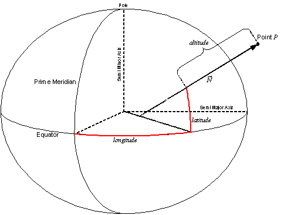
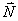

CIGI Host Emulator 3
|
CIGI Host Emulator 3 |
The geodetic coordinate system uses an ellipsoidal earth model and specifies a location in terms of latitude, longitude, and altitude as shown in the diagram below:

Geodetic Position
Given point
P, an imaginary vector
extends through that point that intersects the equatorial plane and is normal to the ellipsoid’s surface. Latitude is the size of the angle formed between this vector and the equatorial plane. This is measured in degrees north (positive) or south (negative) of the Equator and is limited to ±90°.Longitude
is the angle of the arc along the ellipsoid surface from the Prime Meridian to the point on the Equator closest to point P. This is measured in degrees east (positive) or west (negative) of the Prime Meridian and is limited to ±180°.Altitude
is the distance from P to the point of intersection between the ellipsoid surface and the normal vector. This distance is measured in meters above Mean Sea Level (MSL), which CIGI defines as the reference ellipsoid surface. Negative values indicate that the point is below MSL, or inside the reference ellipsoid.Note that positive
Altitude values correspond to negative Z values in a North-East-Down (NED) Cartesian coordinate system.
|
© 2008 The Boeing Company |
rev 3.3.0 |